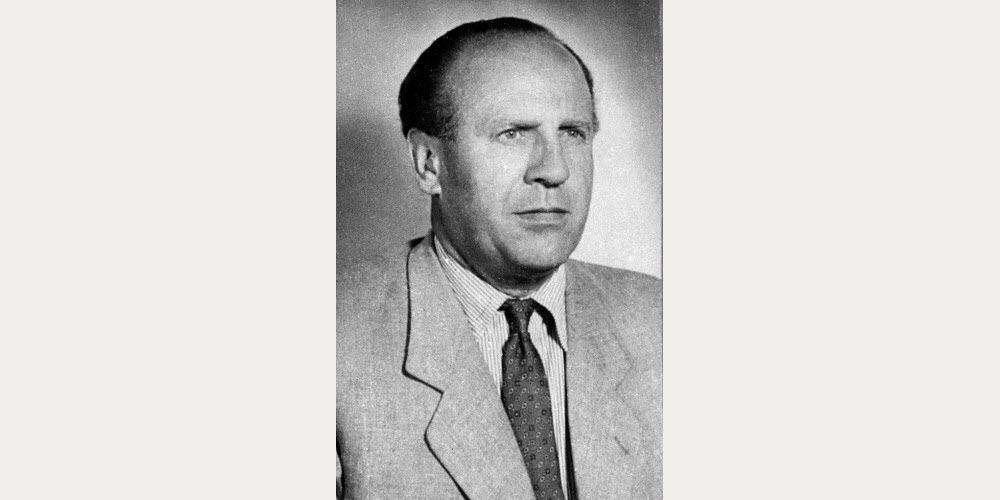
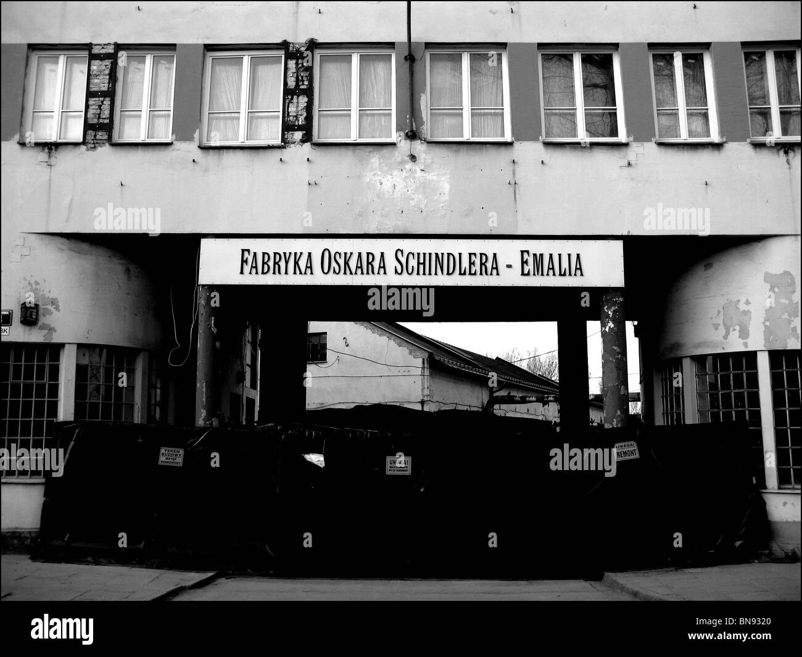
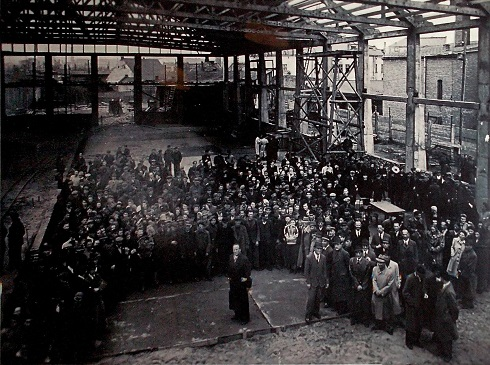
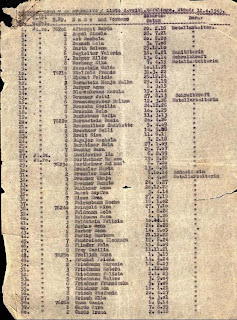

De Oportunista a Salvador en el Holocausto

Oskar Schindler (1908-1974) es mundialmente conocido por haber salvado a más de 1.000 judíos durante el Holocausto. Sin embargo, su perfil original no era el de un salvador ni un hombre de grandes principios morales.
En sus inicios, Schindler era un oportunista codicioso, miembro del Partido Nazi, espía de la inteligencia militar alemana (Abwehr) y un hombre de negocios que llegó a la ciudad de Cracovia en 1939 con el único objetivo de hacerse rico aprovechando los horrores de la guerra.
La aparente contradicción entre su oscuro pasado como espía y sus heroicas acciones posteriores es lo que hace fascinante su historia.

Aprovechando la ocupación nazi en Polonia, Schindler se apoderó de negocios que habían sido confiscados a los judíos. Así fue como compró una fábrica de ollas y sartenes esmaltados en Cracovia a la que rebautizó como Deutsche Emailwarenfabrik (conocida popularmente como "Emalia"). Para administrarla inteligentemente, se apoyó en el antiguo copropietario judío de la fábrica, Abraham Bankier.

Inicialmente, Schindler comenzó a emplear judíos del gueto de Cracovia como mano de obra esclava por una razón puramente económica: era más barato que pagar a trabajadores polacos. Aunque las autoridades alemanas daban total libertad y fomentaban el abuso de estos trabajadores, los testimonios de los sobrevivientes indican que Schindler siempre los trató con humanidad, prohibiendo los castigos físicos en sus instalaciones.
Con el tiempo, al ser testigo directo de la brutalidad del régimen nazi, la mentalidad de Schindler cambió radicalmente. Comenzó a utilizar su inmensa riqueza, sus contactos, influencia e ingenio para proteger a sus empleados a toda costa.
Además de proteger a sus propios empleados, Schindler actuó como mensajero de una organización judía de rescate con sede en Budapest (el Comité de Ayuda y Rescate), pasando información clasificada sobre los asesinatos en masa, además de contrabandear dinero y cartas.
